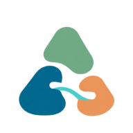
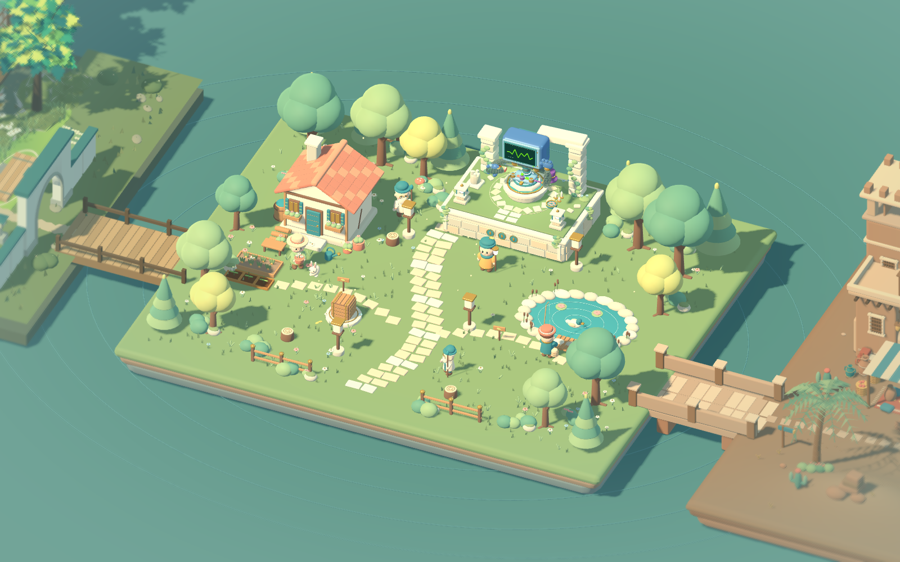
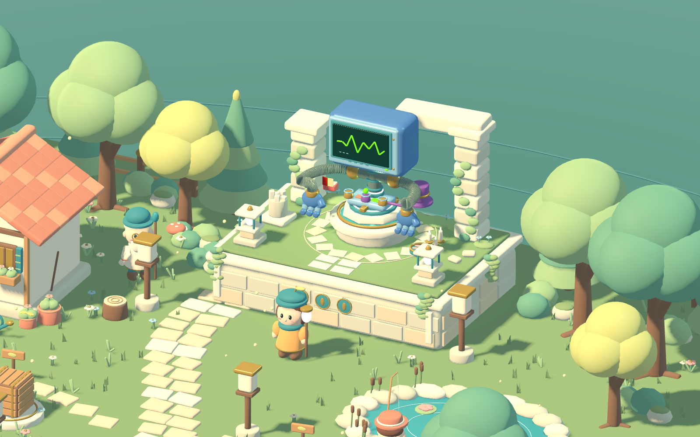

开始一个项目
选择本地文件夹，为想法找个家。文件和作品保存在自己的电脑上。

QCode把项目、文件和 AI 伙伴放在同一个创作空间。
说出目标，看见进展，再亲手体验你做出的作品。

从想法到下一次迭代
选择本地文件夹，为想法找个家。文件和作品保存在自己的电脑上。
说清目标，让 AI 读取和修改项目。查看执行过程，处理需要你确认的操作。
亲自体验成果，提出下一次改动。通过苔伯找回项目与历史对话，继续之前的创作。

按自己的节奏
你的下一件作品
Windows 10 / 11 · x64 · 本地运行
查看 Windows 发布版本 ↗早期预览 · 模型需自行配置 · 安装包未签名
若发布页暂无附件，可按源码安装说明启动。